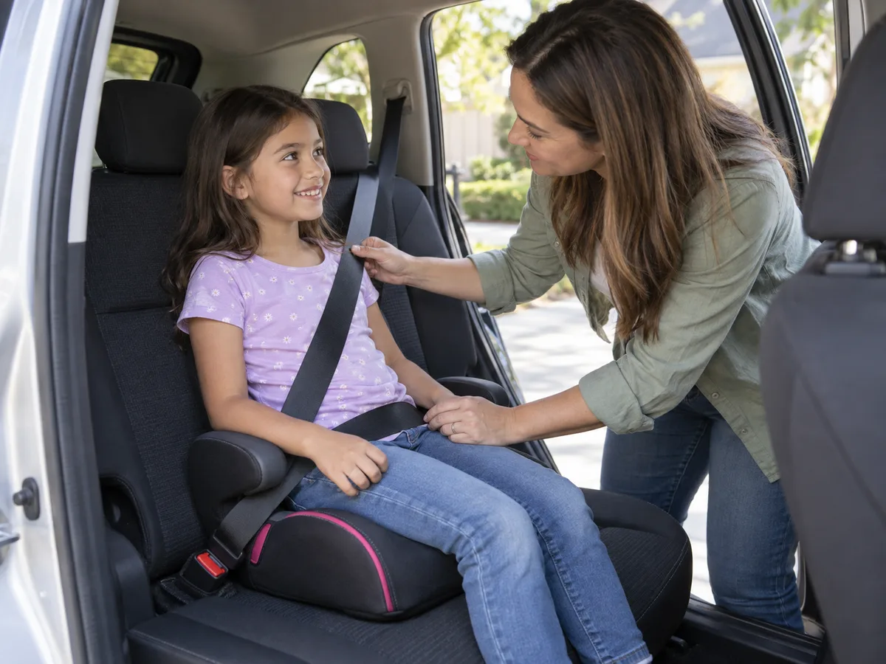
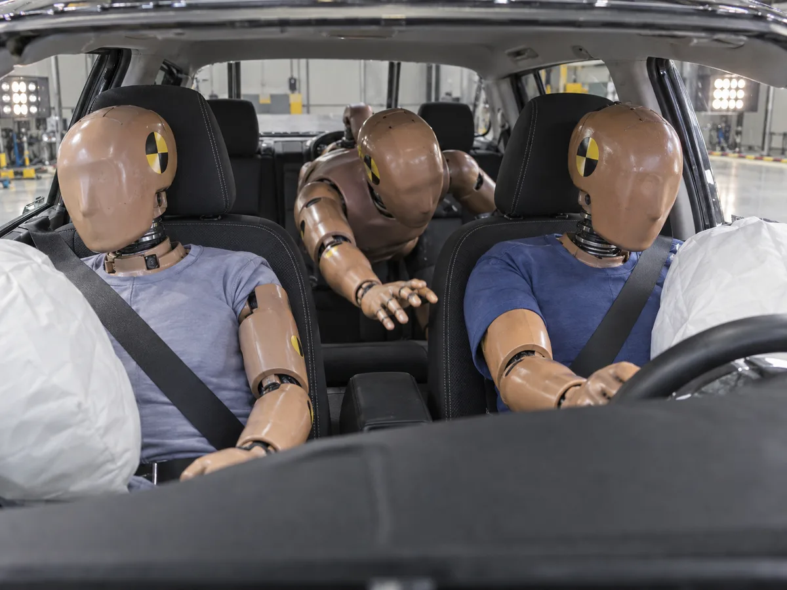
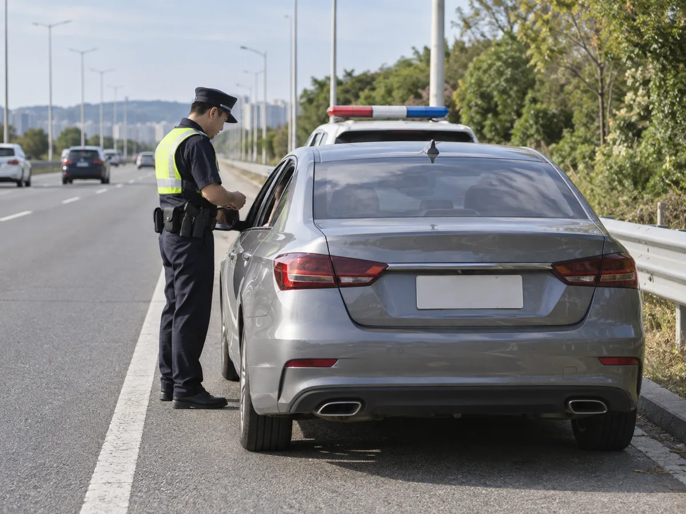
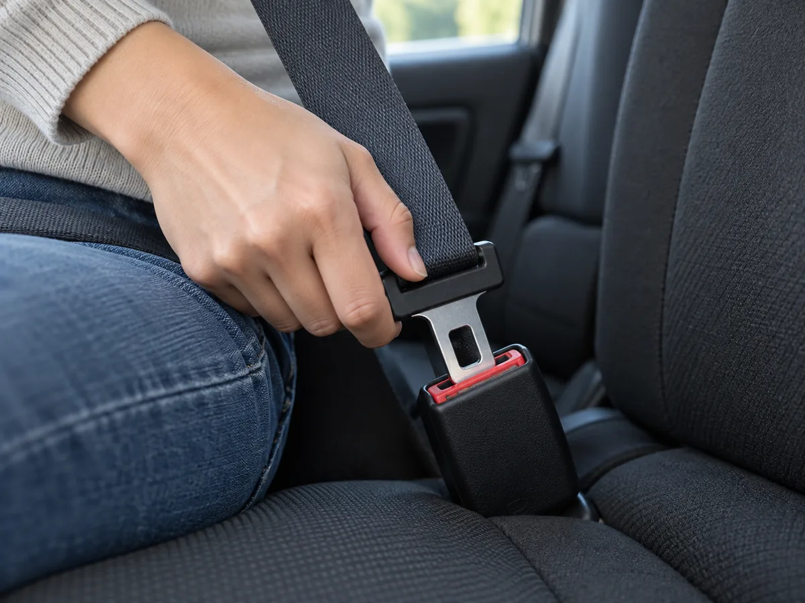

▲ 뒷좌석 동승자 모두에게 안전띠를 매도록 하는 것이 운전자의 의무다 ⓒ CarPrism (AI 생성 이미지)
"뒷좌석인데 설마 잡히겠어?" 그럴 수 있다. 하지만 뒷좌석 안전띠는 단속 이전에 앞자리 사람의 안전과 직결된 문제다. 경찰청은 보험개발원 자동차기술연구소 실험(시속 48km 정면충돌 기준)을 인용해 뒷좌석에서 안전띠를 매지 않으면 중상 가능성이 16배, 사망률이 최대 9배까지 높아진다고 안내했다. 게다가 경찰은 2026년 7월 안전띠 미착용에 벌점 10점 신설을 추진한다고 밝히고 10월부터 집중단속을 예고했다. 이 글은 도로교통법이 정한 전 좌석 착용 의무, 과태료 금액, 벌점 추진 상황, 13세 미만 동승자 책임, 택시·버스 예외, 카시트와의 관계를 공식 안내와 언론 보도를 교차해 정리했다.
1. 도로교통법이 정한 것 — 운전자가 챙길 사람은 '전원'
도로교통법 제50조는 운전자가 좌석안전띠를 매야 하고 모든 좌석의 동승자에게도 좌석안전띠를 매도록 해야 한다고 규정한다. 영유아의 경우 유아보호용 장구를 장착한 뒤 좌석안전띠를 매도록 하는 것이 조문의 취지다. 일반도로 뒷좌석까지 의무가 확대된 것은 2018년 9월 28일 시행이며(서울신문 2018.9.28), 약 2개월의 계도 기간을 거쳐 2018년 11월 말~12월 초부터 본격 단속이 시작됐다고 보도됐다(경향신문 2018.11.30, 서울신문 보도 간 표현 차이).
▲ 뒷좌석 동승자 모두에게 안전띠를 매도록 하는 것이 운전자의 의무다 ⓒ CarPrism (AI 생성 이미지)
📍 의무를 지는 사람은 운전자다
동승자가 성인이어도 과태료는 운전자에게 부과된다. 운전자가 안전띠를 맨 상태여도 뒷좌석 동승자가 안 맸다면 운전자가 처분 대상이 될 수 있다. 법조문 원문은 국가법령정보센터 도로교통법에서 확인할 수 있다.
2. 과태료·범칙금, 얼마인가 — 기준별 정리
생활법령정보(법제처)와 언론 보도를 교차한 결과, 안전띠 관련 금액은 아래와 같다. 승용차 기준이며, 정확한 최신 금액은 시행령 별표 원문으로 다시 확인하는 것이 안전하다. 안내 내용은 생활법령정보 안내 바로가기에서 볼 수 있다.
| 위반 상황 | 부과 대상 | 금액 | 성격 |
|---|---|---|---|
| 운전자 본인 미착용 | 운전자 | 3만 원 | 범칙금 |
| 13세 이상 동승자 미착용 | 운전자 | 3만 원 | 과태료 |
| 13세 미만 동승자 미착용 | 운전자 | 6만 원 | 과태료 |
✅ 일반도로와 고속도로, 금액이 다를까
· 생활법령정보·정책브리핑·경향신문 등 확인한 자료에는 도로 종류별로 금액을 나눠 적은 곳이 없었다
· 전 좌석 착용은 고속도로뿐 아니라 자동차가 다니는 모든 도로에 적용된다는 설명이 다수
· 시행령 별표 원문은 열람하지 못했고(국가법령정보센터 접속 한계), 한국법제연구원 영문 법령 페이지에는 고속도로 여부에 따른 구분이 언급돼 있으나 금액은 확인하지 못했다. 공식 원문 확인 필요
· 현재 안전띠 미착용은 벌점이 없고 범칙금 3만 원만 부과되며, 벌점 10점 신설은 다음 장처럼 추진 단계다
3. 벌점 10점 신설 추진 — 10월부터 달라지는 점
경찰청은 2026년 7월 도로교통법 시행규칙 개정을 통해 안전띠·이륜차 안전모 미착용과 방향지시등 미점등에 범칙금과 함께 벌점 10점을 부과하는 방안을 밝혔다. 머니투데이·경향신문 보도에 따르면 개정안은 7월 20일 국가경찰위원회 심의·의결을 거쳤고, 입법예고와 규제심사·법제처 심사를 거쳐 시행된다. 한 블로그는 9월 8일 기준 입법예고 단계이며 의견 수렴이 9월 14일까지였다고 정리했으나, 시행일은 확정되지 않았다.
| 항목 | 내용 | 확인 수준 |
|---|---|---|
| 현행 | 운전자 미착용 범칙금 3만 원, 벌점 없음 | 다수 자료 일치 |
| 추진안 | 안전띠·안전모 미착용, 방향지시등 미점등에 벌점 10점 신설 | 경찰청 발표 보도, 시행 전 |
| 단속 일정 | 8~9월 홍보·계도, 10~12월 집중단속(사고 다발 지점·고속도로 진출입로 중심) | 머니투데이·경향신문 보도 |
| 무인단속 | 차량 전면을 촬영해 운전석·조수석 착용 여부를 판독하는 장비를 시범 운영 후 도입 검토 | 검토 단계 |
| 근거로 든 통계 | 안전띠·안전모 미착용 시 치사율이 착용 때보다 2배 이상 높음 | 경찰청 설명 인용 |
✅ 아직 확정이 아닌 부분
· 벌점이 동승자 미착용에도 적용되는지는 확인한 보도에서 명확하지 않다(운전자 본인 미착용 기준으로 소개됨)
· 벌점 시행일은 확정되지 않았으므로 경찰청 공지 확인 필요
· 무인단속은 앞좌석 판독이 중심이라 뒷좌석은 현재 현장 단속이 중심
4. 13세 미만 동승 — 금액이 두 배가 되는 이유와 카시트
13세 미만 아동이 안전띠를 매지 않은 채 동승하면 운전자 과태료는 6만 원으로 올라간다. 금액보다 중요한 건 체격에 맞는 안전띠 착용 상태다. 성인용 안전띠는 어깨 벨트가 목에 걸리거나 허리 벨트가 배 위에 놓이기 쉬워 아이에게는 오히려 위험할 수 있다.

▲ 아이 체격에 따라 카시트·부스터를 쓰고 안전띠 위치를 어른이 확인한다 ⓒ CarPrism (AI 생성 이미지)
| 동승자 | 기본 원칙 | 운전자가 확인할 것 |
|---|---|---|
| 6세 미만 영유아 | 유아보호용 장구(카시트) 장착 후 안전띠 착용 | 카시트 고정 상태, 아이 체격에 맞는 유형인지 |
| 6세 이상 13세 미만 | 안전띠 착용(체격에 따라 부스터 등 보조 장구 활용 권장) | 어깨 벨트가 어깨 중앙, 허리 벨트가 골반 위에 놓이는지 |
| 13세 이상 | 성인과 동일하게 안전띠 착용 | 탑승 후 착용 여부를 출발 전 한 번 확인 |
카시트 유형 선택과 설치 방법은 어린이 카시트 선택 가이드에서 다뤘다. 이 글에서는 '안전띠와 카시트를 함께 봐야 처분을 피하고 안전도 확보된다'는 점만 짚는다.
5. 예외는 있다 — 택시·버스와 착용이 어려운 사정
생활법령정보는 다음의 경우 안전띠 착용의무가 면제된다고 안내한다. 경향신문 보도는 택시·버스 승객이 운전자가 착용을 안내했는데도 매지 않으면 과태료를 부과하지 않는 것으로 정리했다.
| 구분 | 내용 |
|---|---|
| 신체 사유 | 임신·질병·장애 등으로 착용이 적당하지 않은 경우 |
| 긴급자동차 | 긴급 출동 중인 긴급자동차 운행 |
| 승강이 잦은 업무 | 우편·택배 등 빈번한 승강이 필요한 업무 |
| 택시·버스 승객 | 운전자가 착용을 안내했는데도 승객이 착용을 거부한 경우 |
📍 예외라도 '안내'는 운전자 몫
택시·버스 예외는 승객이 마음대로 매지 않아도 된다는 뜻이 아니다. 운전자가 안내했다는 전제이고, 실제 적용 범위는 차종·상황에 따라 다를 수 있어 구체 사례는 경찰청 또는 도로교통공단 확인이 필요하다. 개인 승용차 동승자는 위 예외 사유에 해당하지 않는 한 그대로 처분 대상이다.
6. 사고 나면 실제로 어떻게 되나 — 앞좌석까지 위험해진다
안전띠는 급정거·충돌 때 몸이 실내 구조물에 부딪히거나 차 밖으로 튕겨 나가는 것을 막는 장치다. 경찰청은 뒷좌석에서 안전띠를 매지 않으면 다른 좌석보다 방어 수단이 없다는 점을 강조해 왔고, 보험개발원 실험을 소개한 보도는 벨트를 매지 않은 뒷좌석 승객이 앞좌석 승객과 부딪혀 위험을 키울 수 있다고 전했다. 다만 앞좌석 위험이 몇 배 커지는지에 대한 공식 수치는 이번 조사에서 확인하지 못했다.

▲ 벨트를 매지 않은 뒷좌석 승객은 충돌 때 앞으로 쏠릴 수 있다(개념 이미지) ⓒ CarPrism (AI 생성 이미지)
| 수치 | 내용 | 출처·기준 |
|---|---|---|
| 사망률 최대 9배, 중상 16배 | 뒷좌석에서 안전띠 미착용 시 (시속 48km 정면충돌 실험 조건) | 경찰청이 인용한 보험개발원 자동차기술연구소 실험 (정책브리핑) |
| 중상 위험 3.4배 | 뒷좌석 미착용 시. 19세 미만은 6.6배, 성인 머리 중상 가능성 3.0배 | 보험개발원 2018년 충돌시험 (이코노믹리뷰 보도) |
| 치사율 12배 | 미착용 치사율 2.4 vs 착용 0.2 (2011~2015 분석) | 삼성교통안전문화연구소 (서울신문 2018.9.22) |
| 사망률 2배 이상 | 안전띠 미착용 탑승자와 착용자 비교 | 경찰청 설명 (머니투데이 2026.7.29) |
| 32.7% vs 11.4% | 최근 5년 뒷좌석 사망자 중 미착용 비율 vs 운전자 사망자 중 미착용 비율 | 삼성화재 교통안전문화연구소 (이코노미스트 2025.10 인용) |
✅ 수치를 읽을 때
· '2배', '3.4배', '9배', '12배'는 충돌 실험, 실제 사고 통계, 조사 기간이 서로 다른 값이므로 합쳐 비교하지 말 것
· '최대 9배'는 시속 48km 정면충돌 실험 조건이며 모든 사고에 그대로 적용되는 수치가 아님
· 앞좌석 승객 위험이 얼마나 커지는지는 공식 수치를 확인하지 못해 방향성만 소개함
7. 착용률 현실 — 세 가지 조사, 세 가지 숫자
뒷좌석 착용률은 어떤 조사냐에 따라 24%에서 69.7%까지(2018년 조사 30% 포함) 크게 다르게 나온다. 측정 방식과 대상 도로가 다르기 때문으로 보인다. 어느 조사든 앞좌석보다 낮다는 점은 같다.
| 조사 | 뒷좌석 | 앞좌석 | 비고 |
|---|---|---|---|
| 한국도로공사·교통안전공단 (2025년 조사 결과, 서울신문 2026.7.27 보도) | 69.7% | 조수석 85.3%, 운전석 85.0% | 뒷좌석은 전년 대비 8.3%p 하락 |
| 삼성화재 교통안전문화연구소 (2025.1~6월, 서울·대원 톨게이트 72만 1,372대) | 28% | 86% | 이코노미스트 2025.10 인용 |
| 삼성교통안전문화연구소 (2018년 발표 조사) | 일반도로 30%, 고속도로 47% | 확인 못함 | 어린이 뒷좌석 61%, 서울신문 2018.9.22 인용, 법 시행 직전 수치 |
| 한국도로공사 안전띠 검지시스템 시범 운영 (아시아투데이 2026.9.23) | 약 24% | 약 80% | 추석 연휴 캠페인 관련 보도 |
고속도로 사망자 중 안전띠 미착용 비율은 2023~2025년 평균 19%(457명 중 87명)였지만 2026년 상반기에는 28.4%(95명 중 27명)로 9.4%p 올랐다고 서울신문이 보도했다.

▲ 처분을 받는 사람은 뒷좌석 동승자가 아니라 운전자다(개념 이미지) ⓒ CarPrism (AI 생성 이미지)
8. 출발 전 10초 체크 — 과태료도 사고도 막는 방법

▲ 출발 전 '딸깍' 소리를 직접 확인하는 습관이 가장 확실한 방법이다 ⓒ CarPrism (AI 생성 이미지)
| 상황 | 체크 포인트 |
|---|---|
| 출발 직전 | 뒷좌석 자리마다 착용 확인, 아이는 카시트·안전띠 위치까지 확인 |
| 다인승 탑승 | 중앙석 벨트 사용 여부 확인, 승차 정원 초과 금지(승용차 초과 시 과태료 6만 원 안내가 있음) |
| 택시·카풀·렌터카 | 내 차가 아니어도 착용, 렌터카 운전자는 동승자에게 착용 안내 |
| 휴게소 출발 후 | 내렸다 탄 뒤 벨트를 다시 맸는지 재확인 |
2026년 추석 연휴를 계기로 도로공사가 뒷좌석 착용을 강조하는 캠페인을 진행했다는 보도도 있다. 관련 정책 내용은 정책브리핑 안내 바로가기에서 볼 수 있다.
9. 요약
뒷좌석 안전띠는 운전자가 책임지는 전 좌석 의무다. 운전자 본인 미착용은 범칙금 3만 원, 동승자 미착용은 운전자에게 과태료 3만 원(13세 이상)·6만 원(13세 미만)이 부과된다고 안내된다.
현행 미착용에는 벌점이 없지만 경찰청이 벌점 10점 신설을 추진 중이며 시행일은 확정되지 않았다. 10월부터 12월까지 집중단속이 예고됐다.
택시·버스 승객의 안내 후 착용 거부, 임신·질병·장애 등 예외가 있지만 개인 승용차 동승자에게는 대부분 해당하지 않는다. 6세 미만은 카시트 장착 후 안전띠 착용이 원칙이다.
뒷좌석 착용률은 조사에 따라 24~69.7%로 크게 다르지만 모두 앞좌석보다 낮다. 시행령 별표 원문과 앞좌석 위험 수치 등 확인하지 못한 항목은 경찰청·도로교통공단 공식 안내로 다시 확인하는 것이 안전하다. 카시트 선택은 카시트 가이드를 참고하면 된다.